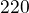

10 led lučk
1 Naloga
Spoznali bomo kako na prototipno ploščo priklopimo 10 LED diod in jih krmilimo s programskim jezikom python.
2 Osnove programiranja
Preden nadaljujemo se najprej lotimo osnov programskega jezika Python
- Povezava na dokument: Osnove programskega jezika Python
3 Sestavine
Pri projektu bomo potrebovali:
- 10x  uporanik
- 10x LED razlčičnih barv
- več veznih žic
4 Vezje
Vezje na prototipni plošči pripravimo tako, da napetost povežemo s eno + povezavo. Nato upornik vežemo na eno izmed nogic LED, drugo nogico LED diode povežemo s žico na GPIO stikalo.
Priporočilo: Posamezne LED diode poveži z GPIO po vrsti, tako da bo prva povezana na pinu 7, druga na pinu 11 in tako dalje. S tem si boš zagotovil lažji redosled pri nastavljanju LED v programu.

Slika 1 Slika vezja priklopa desetih led diod z #220 # upornikom.
5 Koraki izdelave
5.1 Sestavljanje vezja
Po sliki vezja dodaj LED in upornike na prototipno ploščo.
5.2 Testiranje vezja programa
Najprej bomo zapisali program s katerim bomo testirali delovanje vezja
posamezne LED diode. V naslednjem primeru bomo spoznali tri nove programske
stavke s katerimi si bomo v prihodnje olajšali delo. Namesto spremenljivk
bomo uporabili Seznam, napisali si bomo lastne podprograme ali
funkcije, za delo s seznamom bomo uporabili zanko for. V urejevalnik
besedil IDLE kopiraj spodnjo programsko kodo.
#!/usr/bin/env python # -*- coding: utf-8 -*- import time import RPi.GPIO as GPIO # Shranjevanje posameznih priklopov LED na GPIO v seznamu pins = [] def nastavi(): '''Nastavljanje začetnih nastavitev.''' GPIO.setmode(GPIO.BOARD) for pin in pins: GPIO.output(pin, GPIO.HIGH) print('Ugasnjen pin', pin) def pocisti(): '''Pocisti za konec programa.''' for pin in pins: GPIO.output(pin, GPIO.HIGH) print('Ugasnjen pin', pin) GPIO.cleanup() def prizgi_vse(): '''Fukcija prizge vse LED diode, ki so podane v seznamu''' try: # Zapišemo glavni del programa except KeyboardInterrupt: pocisti()